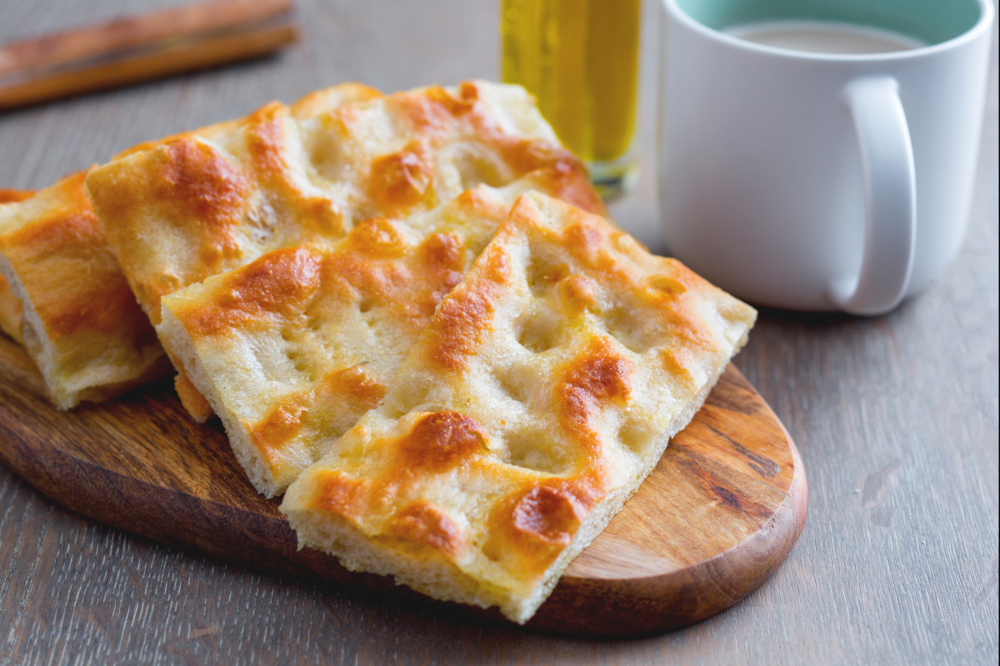

Focaccia alla Genovese is believed to be the original focaccia. Hailing from Genova, this classic focaccia is coated in olive oil and sprinkled with coarse sea salt. Unlike other focaccias, this one is traditionally shaped into a flat rectangle. It consists of flour, yeast, salt, sugar, water, and olive oil.
Meal prep time : 2 hours
Servings : 6